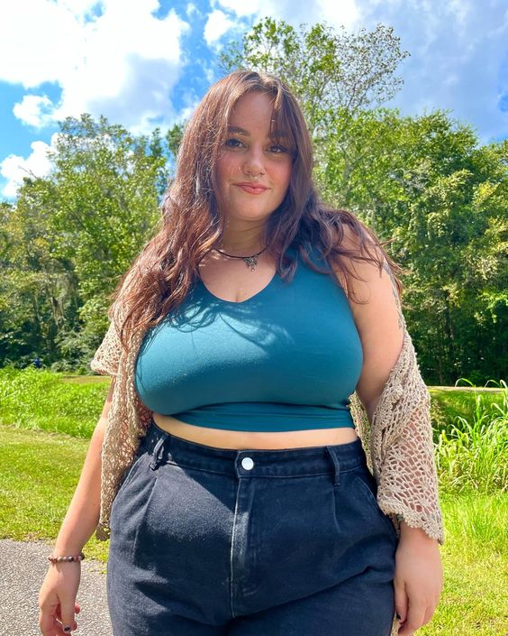

Conheça Nossos Artistas
Mirella Ramos
Sou uma talentosa pintora que adora criar obras com técnicas mistas, explorando texturas e cores vibrantes.
Minhas telas capturam a essência da natureza, tentando transportar os observadores para um mundo de beleza
e contemplação.
Lucas Lee

Sou um artesão de crochê. Trabalho há muitos anos criando peças lindas usando fios de lã. Cada item que produzo é feito à mão,
com muita paciência e cuidado. Desde roupas e acessórios até objetos decorativos para o lar, tudo é confeccionado com a técnica
do crochê.
Rafa Lyra

Meu nome é Rafael e sou um apaixonado criador de joias exclusivas.Desde criança me fascino pelo poder
expressivo de diversos materiais, transformando-os em peças únicas que refletem minha visão artística.
Giovana Costa

Sou uma ceramista cujo trabalho é marcado pela aplicação de técnicas tradicionais e contemporâneas.
Meus objetos utilitários e decorativos, como vasos e pratos, impressionam pela elegância da forma e da textura.
Murilo Oliveira
Meu nome é Murilo e sou designer gráfico especializado em criar identidades visuais memoráveis para empresas.
Acredito que um bom logo e uma marca coesa são fundamentais para ajudar as empresas a se destacarem e se
conectarem com seu público.
Camila Ramos
Olá, eu sou a Camila, uma artista apaixonada por bordar peças que trazem a beleza e a tranquilidade da natureza para dentro do seu lar.
Minhas criações são verdadeiras telas tecidas à mão, com delicados desenhos de flores, folhagens e paisagens inspiradas pelos
ambientes naturais.
Laura Bueno

Sou uma artista apaixonada por expressar minhas ideias através do desenho. Desde criança, sempre me fascinou a capacidade
do traço de dar vida a personagens, paisagens e conceitos abstratos em uma folha de papel.
Iracema Pires
Meu nome é Iracema e sou uma escultora apaixonada por transformar materiais brutos em peças que despertam a imaginação.
Meu fascínio pela forma e pelo volume me leva a explorar uma ampla gama de materiais.